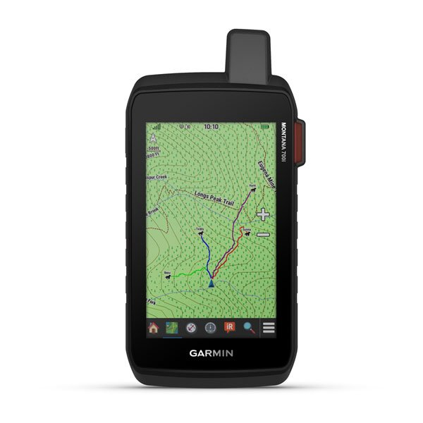

Technology is used in hunting more than people think, technology is a very good and helpful thing in huntin. Some technology that is used for hunting is like GPS or aerial imagery and there is even technology in trail cameras. And in my opnion one of the biggest reasons why technology is so iportant to hunting is that you can buy your tags online, you can even buy hunting gear online.
The hunting lifestyle that we enjoy in this century is a far cry from the world that our parents and grandparents enjoyed. Without question, the biggest impact to the sport of hunting is the way we as sportsmen and women utilize technology. Technology’s impact on hunting continues to grow each and every year, and while there are many cases where this can certainly be seen as a positive, for many there can be a limit to the benefits that advanced hunting technology can provide. One such cap is the duty of hunters to define what is and what is not ethical. As technology inches us closer and closer to this internal dispute, a moment should be taken to step back and debate it out loud.
To really argue whether or not recent advances in hunting technology are ethical, hunters need to understand what technology is out there. By far the biggest developments is the ever expanding scouting technologies. Technology such as pinpoint accurate aerials, GPS units, mobile game cameras, and personal drones are now creating difficulty for every hunter. On one hand, the technologies help us get closer to game, they keep us busy in the stand, and they instantly connect us to what is happing in the woods when we are not around. On the other hand, there is no mystery left in hunting, no giants in the woods we don’t have a name to, and no hidden locations left to discover.
